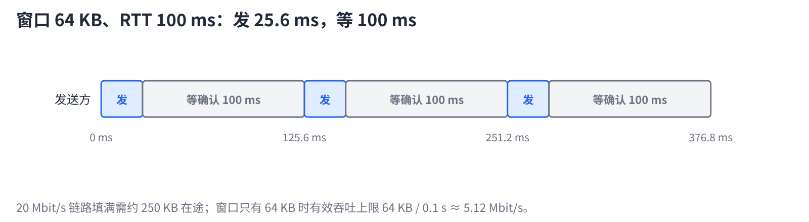
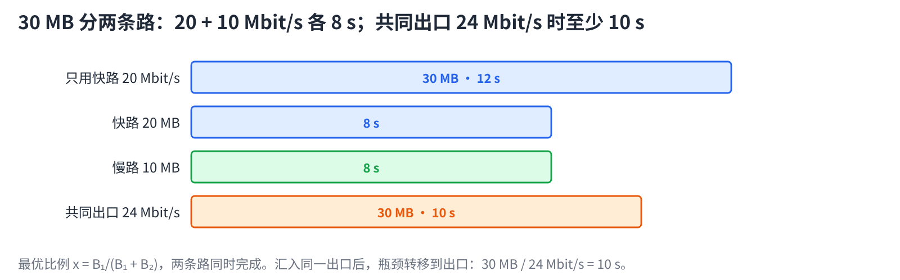
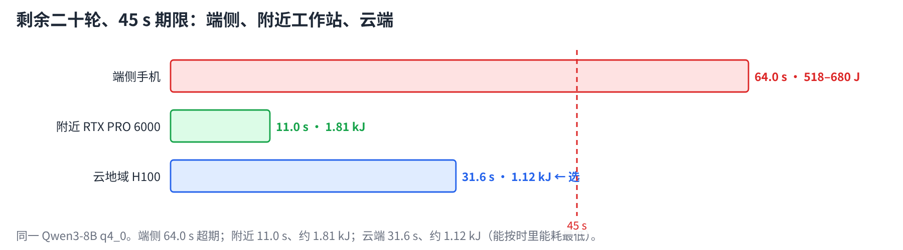
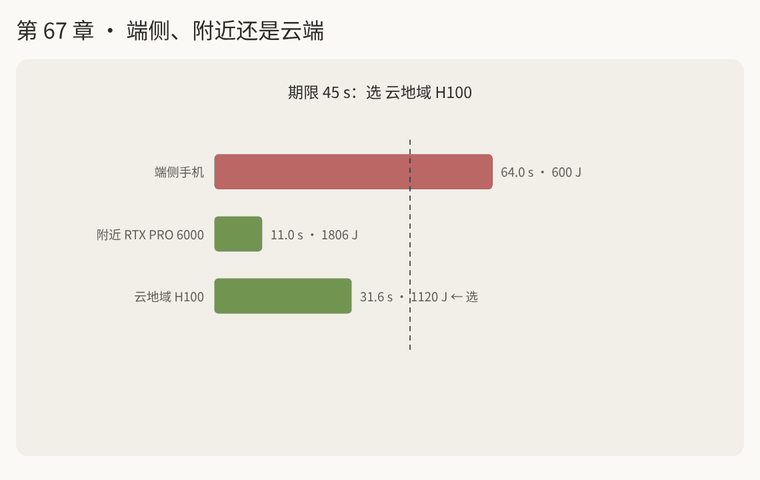

第 67 章 · 广域网、无线与部署选择：剩下二十轮放哪儿
本地运行
git clone https://github.com/wikieden/ai-infra-from-constraints
cd ai-infra-from-constraints/code/notebooks
pip install jupyterlab torch numpy
jupyter lab ch67_wan_deploy.ipynb也可以下载后直接用 VS Code 打开 .ipynb 运行。需要 GPU 的章节在 Colab 里选「代码执行程序 → 更改运行时类型 → GPU」。
本章回答：每轮都重新建连接要多花多少？窗口为什么能让 20 Mbit/s 的链路只跑出 5 Mbit/s？丢包 14% 的路径上 TCP 为什么只剩 0.16 Mbit/s？跨地域语音的差距到底来自路径还是配置？双路径怎么分流、什么时候瓶颈跑到共同出口？截图 Agent 剩下二十轮、45 秒期限，放手机、附近工作站还是云端？
讲解日期：2026-11-24 · 上一章：第 66 章 跨设备分工与会话迁移 · 全书最后一章
对应原文：materials/ai-infra-book/manuscripts/12-端边云协同.md§12.3 L315–L457、§12.4 L458–L533、§12.5 L534–L659（图 12-17 至 12-31）（§12.3–§12.4 传输层细节只讲结论）
本章缩写：TCP = Transmission Control Protocol（传输 / 控制 / 协议）· ACK = Acknowledgement（确认）· MSS = Maximum Segment Size（最大 / 报文段 / 大小）· BBR = Bottleneck Bandwidth and Round-trip propagation time（瓶颈带宽与往返传播时间）· FEC = Forward Error Correction（前向 / 纠错）· OFDM = Orthogonal Frequency-Division Multiplexing（正交 / 频分 / 复用）· SIFS = Short InterFrame Space（短 / 帧间 / 间隔）。全部缩写见 缩写与术语表
讲解
第一步：连接、窗口与协议开销（结论）（2026-11-24）
类比：每次打电话都要先拨号、等接通、对暗号。 说一句话挂一次，大部分时间花在接通上；不挂断一直聊就省了。
原文 §12.3.1–§12.3.2 L317–L356：
- 连接复用：截图任务 30 轮、RTT 0.2 s，建链多两次往返。每轮重建累计 12 s，只建一次 0.4 s，省 11.6 s。
- 窗口：\(B_{\mathrm{useful}} = \min(B_{\mathrm{path}}, W/\mathrm{RTT})\)。20 Mbit/s × 100 ms 要约 250 KB 在途；窗口 64 KB 时上限 5.12 Mbit/s：发 25.6 ms、等确认 100 ms。新连接从约 10 个 1460 B 段起步、每轮翻倍，前四轮只发 219,000 B——短请求可能在窗口长大前就结束了。
- 协议头和 ACK：每包 1168 B 载荷、60 B 头、每包一个 92 B ACK，三万包多约 4.6 MB，图片任务多约 1.6 s。ACK 既占链路，又释放发送额度。

图 67-1 · 带宽 × 时延（BDP）是要填满管道的在途数据；窗口小于它，速率就被窗口封顶。
一句话：短请求里，接通和窗口爬坡常常比传输本身还长。
第二步：丢包、多流与跨地域语音（结论）（2026-11-24）
类比：车道里有坑。 司机每遇到坑就以为前面堵车，于是减速；坑不是堵车，减速也没用。
原文 §12.3.3–§12.3.5 L357–L457：
- 无线或长距离路径上的随机丢包不代表拥塞，TCP 照样减速：
丢包 14%、RTT 200 ms、MSS 1460 B：约 0.156 Mbit/s（C = 1.22 时 0.19），355 KB 的语音请求光发送就要约 18 s。BBR 测带宽不靠丢包，但重传的尾部还在；FEC 多发 r 个修复符号，接收方自己补缺包。 - 多流优先级：共享链路上 FIFO 时图片 5 s、音频 6 s 完成；音频优先时音频 3 s、图片 6 s。整个连接一个接收顺序时，前面的缺口会堵住后面的数据（队头阻塞）。 - 跨地域语音实测（贵阳—Irvine，355 KB，RTT 约 200 ms，模型 30 ms）：新建连接时直接路径 1.19 s、中转路径 0.30 s；保持连接并调优后都约 0.24 s——原来的差距主要来自连接准备和发送配置。之后再比：模型 30 → 3 ms 省 27 ms，RTT 200 → 20 ms 省约 180 ms。
一句话：先排除配置差异再比路径；离用户近省的往返，常常比模型加速多。
第三步：无线与双路径（结论）（2026-11-24）
类比：两条路去机场。 行李分两车走，让两车同时到；但如果两条路最后都要过同一个收费站，收费站就是瓶颈。
原文 §12.4 L458–L533：
- 无线固定开销：一次数据帧交换的物理层前导、SIFS、ACK 合计 94 μs；数据帧 208 → 40 μs（−80%），整次交换只缩短约 56%。小报文要合并发。
- 音频要按播放时刻算价值：FIFO 下八块音频最终都到了，却全错过播放时刻；媒体优先则都按时。取消要算控制消息到达前远端还会产生多少块。
- 双路径分流：20 和 10 Mbit/s，按 \(x = B_1/(B_1 + B_2)\) 分，30 MB 两边同时 8 s 完成（只用快路 12 s）。两条路汇入同一个 24 Mbit/s 出口时，至少 10 s——瓶颈转移到共同出口。复制发送能避开单路故障，代价是双倍带宽，接收方按块号去重。

图 67-2 · 让两部分同时完成是最优；共同出口的割集下界不随接入变快而变。
一句话：分流让各路同时完成，但总量还要过共同出口。
第四步：剩余二十轮放哪里（2026-11-24）
类比：赶飞机前最后一段路。 走路最省钱但来不及，打车最快但贵，地铁能准时又便宜——先排除来不及的，再挑便宜的。
原文 §12.5 L534–L659：第 65 章的 30 轮截图任务已完成十轮，剩下二十轮必须 45 s 内完成（原服务每轮 3.5 s 要 70 s，必须换）。三处都跑 Qwen3-8B q4_0、8K 上下文，每轮约 45 个 token：
| 位置 | 硬件 | 准备 | 每轮模型 | 上行 | RTT | 二十轮 | 能耗 |
|---|---|---|---|---|---|---|---|
| 端侧 | 手机 84.8 GB/s | 0 | 2.90 s | 不用传 | 0 | 64.0 s（超） | 518–680 J |
| 附近工作站 | RTX PRO 6000，600 W | 0.27 s | 0.137 s | 80 Mbit/s | 0.02 s | 11.0 s | 约 1.81 kJ |
| 云地域 | H100 SXM，700 W | 0.14 s | 0.073 s | 6.4 Mbit/s | 0.20 s | 31.6 s | 约 1.12 kJ |

图 67-3 · 云端模型比附近工作站每轮快 0.064 s，但上传多 0.92 s、传播多 0.18 s；二十轮下来慢 20.6 s。
- 期限先排除端侧（能耗最低，但 64 s）；附近和云端都能按时，再比能耗：H100 功率更高，但忙的时间只有一半多，云端 1.12 kJ 更低 → 选云端，比原服务的 70 s 省约 38 s。
- 云端追不上附近：不含上传也要 11.6 s（每轮 0.2 s 往返 × 20），已比附近的 11.0 s 慢；更紧的期限只能附近工作站满足。按实测（batch 1 每步约是读取下界的 2.83 倍）放大，附近 16.04 s、云端不含上传 14.29 s，结论会翻转，所以要实测校准。
- 余量：期限要上行 \(b \ge 128/33.4 \approx 3.8\) Mbit/s；4 Mbit/s → 43.6 s（只剩 1.4 s），3.5 Mbit/s → 48.2 s 超期。十轮 6 + 十轮 10 Mbit/s（平均 8）要 28.7 s，比全程 8 Mbit/s 的 27.6 s 慢——发送时间与速率成反比，慢的几轮多等的比快的几轮省的多。
- 断连恢复（第十轮确认没回来就断，重连 1 s）：保留前九轮进度只重做一轮 34.2 s；丢掉十轮进度要 48.3 s 超期。
- 文本 Agent 换了重点：前缀重复多、输入小，保留会话状态把矩阵计算从 \(3.0 \times 10^{14}\) 降到 \(6.0 \times 10^{13}\) FLOPs，代价是 465 MB 状态一直占显存。
| 条件变化 | 结果 | 选择 |
|---|---|---|
| 云端上行 6.4 Mbit/s | 云 31.6 s / 1.12 kJ；附近 11.0 s / 1.81 kJ | 云端（都按时、能耗低） |
| 云端上行降到 3.5 Mbit/s | 云 48.2 s | 改附近工作站 |
| 期限更紧（< 11.6 s） | 云端无论多快的上行都不够 | 只能附近工作站 |
| 断连一次、保留九轮 | 34.2 s | 仍按时 |
| 断连一次、丢十轮 | 48.3 s | 改进进度保存，或改附近 |
最后回到全书的方法：固定轨迹里模型 8 s、其他 2 s，模型快 10 倍也只到 2.8 s。剩下的 2 s 要靠改系统组织——就近执行、保留环境——而那又进入新的成本预算。
场景代码：用 httpx 复用连接（HTTP/2 一条连接上多路请求），这就是第一步"只建一次"的写法（真实 API）：
import httpx
with httpx.Client(http2=True, base_url="https://api.example.com", timeout=10) as client: # 只握手一次
for shot in screenshots: # 二十轮都复用同一条连接
r = client.post("/agent/step", content=shot, headers={"Content-Type": "image/png"})
do_action(r.json())
一句话：先按期限排除，再比能耗或成本；条件一变（上行、期限、故障）就重算。
动画演示：剩余二十轮放哪里

可交互版：animations/67-wan-deploy.html（滑块：云端上行 1–50 Mbit/s；云端 RTT 0.02–0.5 s；期限 10–80 s；截图 0.1–2 MB）。
怎么看：
- 三根横条是端侧、附近、云端的二十轮完成时间，竖线是期限（第四步）；
- 能按时的标绿，并标出其中能耗最低的；
- 播放：6.4 Mbit/s（选云端）→ 3.5 Mbit/s（云端超期，改附近）→ 期限 12 s（只剩附近）→ 截图压到 0.2 MB。
练习与作答记录
题 1（第一步）：链路 100 Mbit/s、RTT 40 ms、窗口 128 KB。有效吞吐上限多少？要填满链路窗口至少多大？
作答记录：（待作答）
题 2（第三步）：两条路径 30 和 10 Mbit/s，传 40 MB。最优怎么分、多久？若汇入一个 32 Mbit/s 的出口呢？
作答记录：（待作答）
题 3（第四步）：云端上行变成 5 Mbit/s、截图压到 0.5 MB，其他不变。云端二十轮多久？能在 45 s 内完成吗？
作答记录：（待作答）
口诀
打电话说一句挂一次，大半时间在拨号；
坑不是堵车，见坑就刹车也没用；先排除配置再比路径；
行李分两车同时到，最后都过一个收费站；
赶飞机先排除来不及的，再挑便宜的；条件变了重算一遍。
本章复习卡片
I220（连接复用省 11.6 s；B_useful = min(B_path, W/RTT)：64 KB 窗口 5.12 Mbit/s；丢包 14% TCP 约 0.16 Mbit/s；跨地域语音调优后两条路径都约 0.24 s；RTT 降 180 ms vs 模型省 27 ms）、I221（双路径 x = B₁/(B₁ + B₂)：8 s，共同出口 24 Mbit/s 至少 10 s；无线固定 94 μs 让载荷缩短 80% 只省 56%）、I222（剩余二十轮：端侧 64.0 s 超、附近 11.0 s / 1.81 kJ、云 31.6 s / 1.12 kJ → 选云；上行 ≥ 3.8 Mbit/s；云端不含上传 11.6 s 追不上附近；断连保留九轮 34.2 s、丢十轮 48.3 s）。练习做完后，按答错、卡住的地方再补。
附录 · 延伸阅读
留给以后深入学习用，不影响本章主线。★ 是建议先读的。
推荐阅读
| 读什么 | 读哪里 | 读它为了什么 |
|---|---|---|
| ★ AII 第 12 章 | §12.3–§12.5 L315–L659 | 本章原文 |
| Mathis et al. 1997《The Macroscopic Behavior of the TCP Congestion Avoidance Algorithm》 | 稳态吞吐公式 | 丢包下的速率 |
| Cardwell et al. 2016《BBR》（ACM Queue） | 瓶颈带宽与 RTT | 不靠丢包测速 |
| 第 42 章 共享网络中的拥塞与可靠性 | 拥塞控制、PFC / DCQCN | 数据中心里的同一问题 |
| 第 30 章 从局部优化到完整请求 | Amdahl | 全书的同一个结论 |
数学原理
- 带宽时延积：填满管道要 \(B \times \mathrm{RTT}\) 的在途数据。
- 调和平均：发送时间与速率成反比，速率波动的平均发送时间大于平均速率对应的时间。
- 割集：多条接入汇入一个出口时，总量 / 出口带宽是下界。
公式清单
| 公式 | 意思 |
|---|---|
| \(B_{\mathrm{useful}} = \min(B_{\mathrm{path}}, W/\mathrm{RTT})\) | 窗口限速 |
| \(B \approx \mathrm{MSS} \cdot C/(\mathrm{RTT}\sqrt{p})\) | 丢包下的 TCP 速率 |
| \(x = B_1/(B_1 + B_2)\) | 双路径最优分流 |
| \(T = T_{\mathrm{prep}} + N(S/b + T_{\mathrm{term}} + T_m + R)\) | 剩余轮数的完成时间 |
代码对照：把本章的数字用代码算一遍
代码
ai-infra/solutions/chapter-code/ch67_wan_deploy.py，测试tests/test_ch67.py：
bash cd ai-infra/solutions/chapter-code uv run python ch67_wan_deploy.py uv run pytest tests/test_ch67.py
| 讲义 | 写法 | 跑出来 |
|---|---|---|
| 第一步 | useful_bw(20e6, 64000, 0.1) |
5.12 Mbit/s |
| 第二步 | mathis_bps(0.14) |
0.156 Mbit/s；355 KB 约 18 s |
| 第三步 | split(20e6, 10e6, 240e6, egress) |
8 / 10 s |
| 第四步 | remaining(site, uplink=...)、energy_j(site) |
64.0 / 11.0 / 31.6 s；1806 / 1120 J；3.8 Mbit/s；34.2 / 48.3 s |
代码里才看得到的 3 件事：
mathis_bps取 C = 1 时得 0.156 Mbit/s、发送约 18.2 s，原文写 18.3 s；C = 1.22 时 0.19 Mbit/s。energy_j对工作站和云端按"额定功率 × 忙碌时间（准备 + 20 轮模型）"算，端侧按每 token 0.576–0.756 J × 每轮 45 个 token。remaining(..., uplink=1e12)用一个极大的上行模拟"上传瞬间完成"，得到云端的 11.6 s 下限。
自己改一改（不影响练习答案）：
- 给
remaining加"每轮建连 2 RTT"的开关，看云端多多少。 - 用
split算三条路径 20 / 10 / 5 Mbit/s 的最优分流。 - 把模型时间按实测 2.83 倍放大，重算三处的二十轮时间，看选择是否改变。